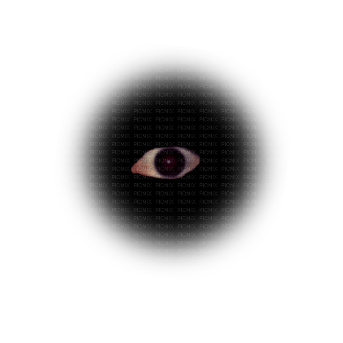

Scan2Katalog
TypeScript
Proyecto personal orientado a escanear y organizar catálogos de forma práctica.
Ver en GitHub

// portafolio_2026
@yountek14
código en el limbo · construyendo cosas raras que funcionan
Soy estudiante de Ingeniería en Informática en Duoc UC (2° año, 4° semestre), con especialización en desarrollo de software.
Antes de la carrera cursé un bootcamp Java Fullstack en Fundación Forge, donde armé las bases de backend, frontend y trabajo en equipo.
Me gusta mezclar lo técnico con lo visual: apps, agentes con IA y experimentos web con estética un poco off.
TypeScript
Proyecto personal orientado a escanear y organizar catálogos de forma práctica.
Ver en GitHubJava
Evaluación grupal: marketplace / gestión de mercado con enfoque backend en Java.
Ver en GitHubPython · CrewAI
Agente de IA para consultas y reportes de clima, construido con Python y agentes.
Ver en GitHub¿Idea rara, colaborar o solo saludar? Escríbeme.